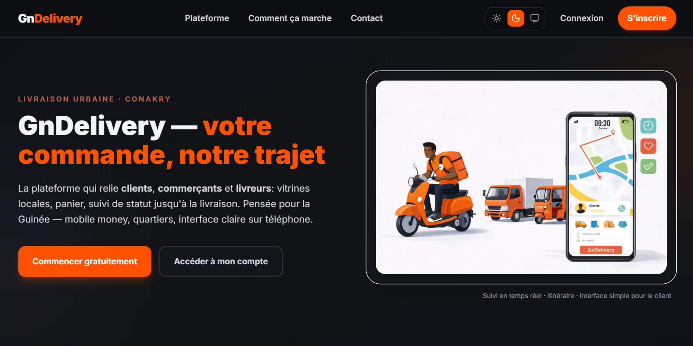

GnDelivery Mémoire
Plateforme web de livraison urbaine à Conakry mettant en relation clients, commerçants et livreurs : gestion des commandes, suivi en temps réel, messagerie, assistant conversationnel et paiement adapté au contexte local (Orange Money, Mobile Money). Évaluée par des tests fonctionnels, des mesures de performance et une enquête de satisfaction.